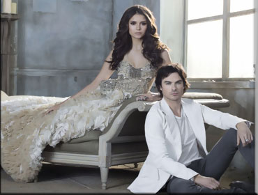

3ª Temporada

Na terceira temporada de The Vampire Diaries, que acaba de começar.
Stefan começa como seguidor de Klaus, o vampiro original, que também
é um lobisomem, ou seja, é um híbrido, que após salvar a vida de Damon,
obriga Stefan a se juntar com ele, em busca da criação de novos híbridos.
Elena e Damon que agora estão mais próximos após a partida de Stefan, e
devido aos acontecimento com a família dela. Saem em busca de uma solução
para resgatar Stefan, mas ao encontrarem ele, ele diz não querer ser salvo.
Acontece o início do romance entre Caroline e Tyler, e a mãe de ambos
descobre suas verdadeiras identidades. Jeremy, após ter sido trazido de
volta a vida por Boonie, anda tendo visões de suas antigas namoradas.
E vamos esperar para saber o que mais acontecerá.
Ir para GUIA TERCEIRA TEMPORADA